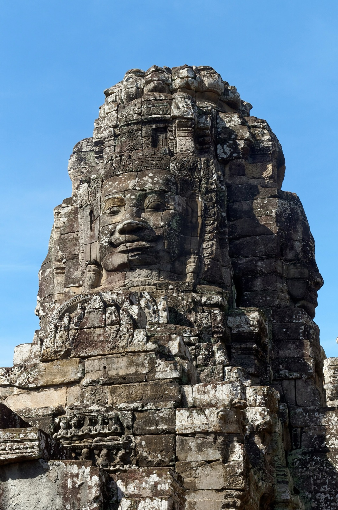
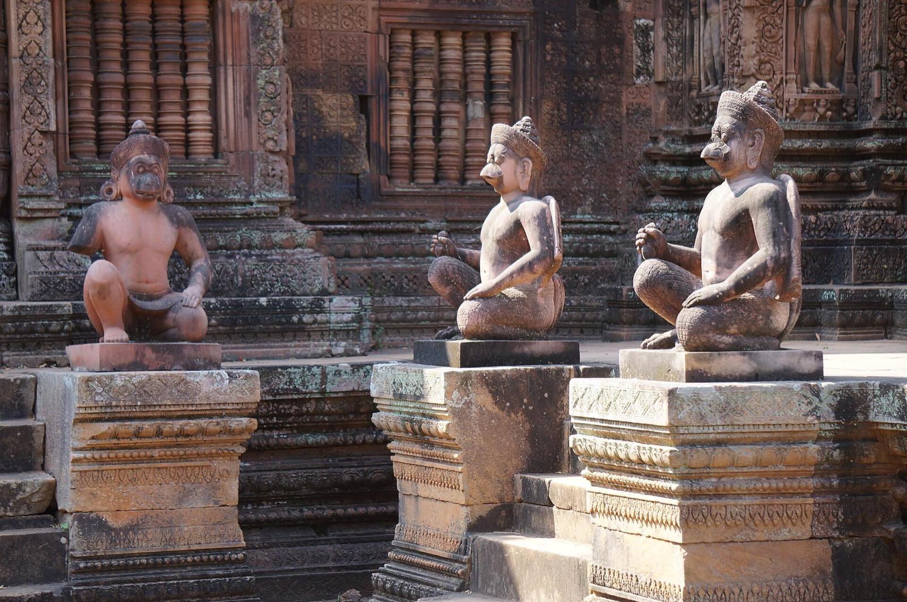
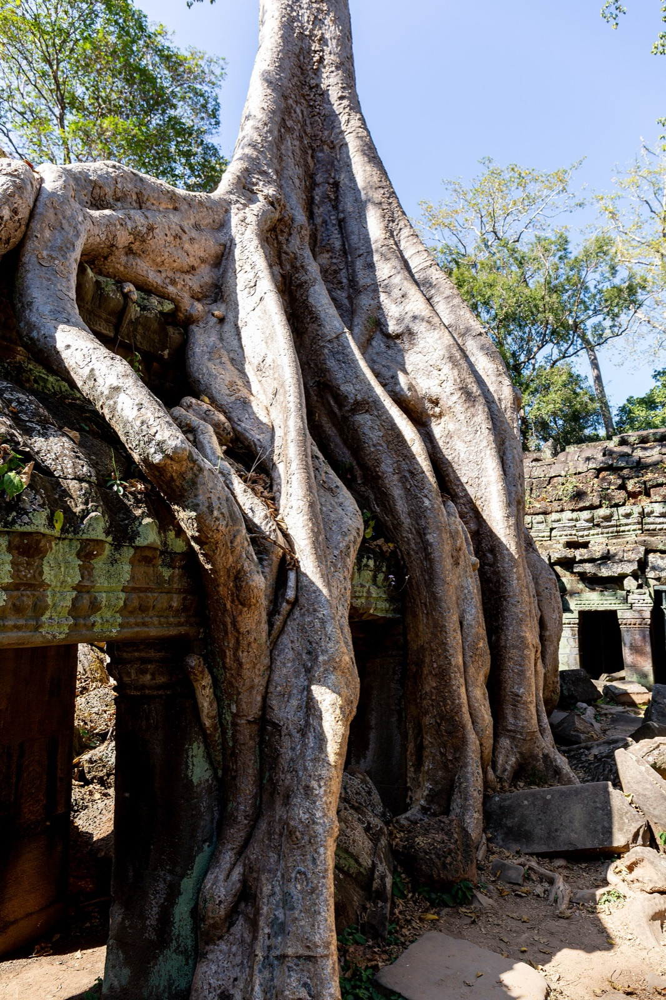
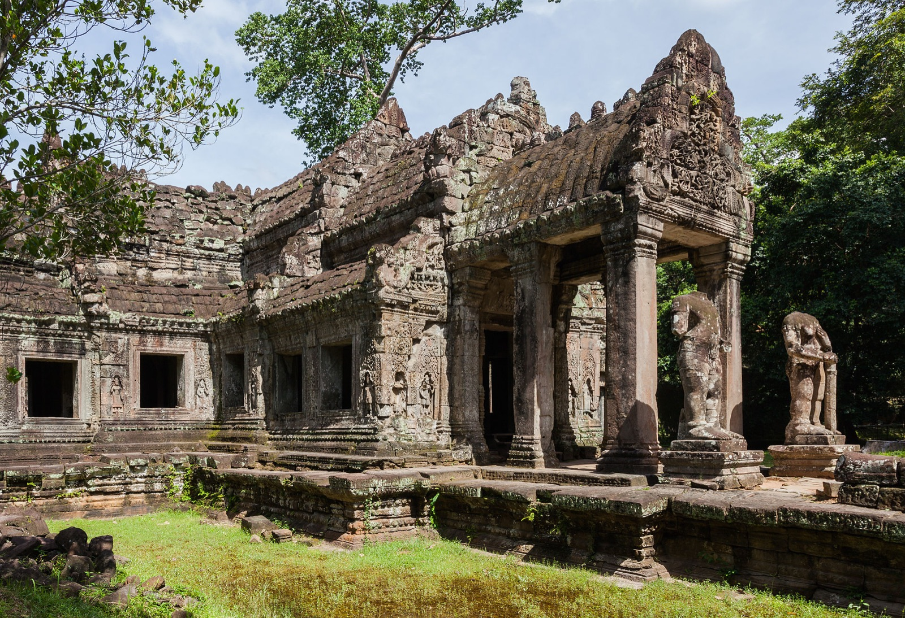
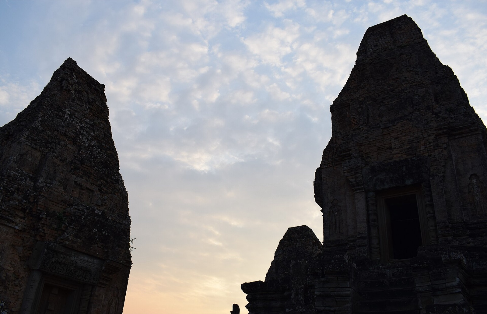
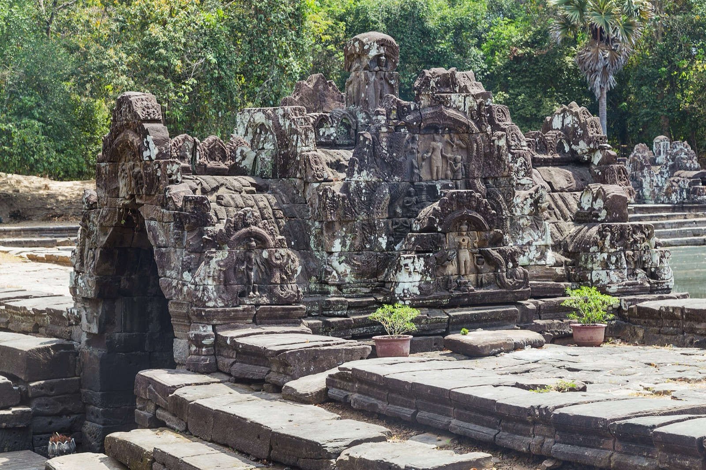

2效率优先
核心浓缩版
吴哥窟、吴哥通、巴戎寺、塔普伦寺与女王宫都能覆盖；代价是早起、转场密、几乎没有留白。
8–10h每天在外
6 大核心代表性遗址
偏紧行程节奏

两天能看完“名片”，三天才看见吴哥的层次。把时间、路线、体力和遗憾摊开比较，选一个真正适合你的版本。
吴哥窟、吴哥通、巴戎寺、塔普伦寺与女王宫都能覆盖；代价是早起、转场密、几乎没有留白。
把小圈、大圈与外圈拆开；多出圣剑寺、涅槃宫、比粒寺，也有午休和光线选择。
两天版不是“残缺版”，而是高密度精华版。三天真正买到的并非多几个寺，而是更好的光线、更少的正午暴晒，以及在巴戎寺和圣剑寺里慢下来观察的时间。
行程总长有限、体力不错、第一次来只想覆盖地标；愿意 04:30 起床，也接受两个长日连续输出。
喜欢建筑、历史、摄影，或不想把吴哥变成打卡赛跑；尤其适合带父母、怕热或雨季出行。
Interactive map · 真实地图
切换两天或三天方案，地图会显示每天的颜色、顺序与寺庙标注。线路连接表示游览顺序，并非逐弯导航道路；点标记可直接跳到 Google Maps。
地图标注按公开地理坐标绘制；彩色连线只表达建议访问顺序，不替代实时道路导航。每个节点之间通常还有 10–40 分钟车程。女王宫距核心园区较远，两天版第二日建议用汽车。
Day by day · 逐日安排
时间按住在暹粒市区、包车或嘟嘟车、已提前买好通票估算。每段留了少量缓冲，但现场开放、道路与天气会变化；让司机按当天情况微调。
2 days · Core compression
适合体力中上、拍照不追求等待空镜的人。第一天锁定三大名片，第二天用汽车串联女王宫与大圈。

取舍原则：不要为了“全看”牺牲吴哥窟与巴戎寺；下午支线可以删。

这天最容易超时。累了就删东梅奔和日落，保留女王宫、圣剑寺、涅槃宫。
3 days · Layered Angkor
三天不是简单多塞一天：把王城、大圈与外圈拆开，能用更好的光线参观，也能在中午真正坐下休息。

下午留白：按摩、泳池或睡觉。第二天不会带着“日出债”进王城。

这一天的重点是“王城如何运作”，不是寺庙数量。请导游的收益也最高。

若你只想看经典，可把罗洛士换成自由下午；三天版的价值也包括“不必塞满”。
What the third day adds
从森林吞没建筑的张力，到水利系统的尺度，再到红砂岩的细密雕刻。它们不只是“又一座寺”。
两天版也会来，但三天版能错开最拥挤的时段，并保留足够时间钻进侧廊。

走过水库栈道，理解吴哥不仅是塔，也是水利城市。
红砂岩使细节像木雕；早晨斜光比正午更能读出层次。
长轴、院落、树根与两层石构藏经阁连续展开，是大圈最值得慢走的一站。
Your likely case · 你的实际情况
这是很好的 2.5 天“甜点位”：不必多请一天假，也不必把半天浪费在市区。买 3 日票，把一个轻量寺庙组从两个长日里拆出来。
两个全天已经覆盖核心；半天用来减压，而不是再新增一个遥远景点。整个体验会明显好过纯两天。
Trade-offs · 取舍表
门票几乎不是区别：2 天与 3 天都适合买同一张 3 日票。差别主要来自司机时长、住宿一晚，以及体力恢复。
Final recommendation
这是第一次到吴哥最均衡的长度：足够完整，又还没进入“每座寺开始相似”的边际递减区。若你的真实条件是两个全天＋半天，则不必为了凑满三天额外多请假——按上面的 2.5 天方案直接去。
Before you go · 行前
具体开放时间会按寺庙与现场管理调整。通票标示园区最早 05:00 入园，但多数寺庙不是 05:00 开门；日出计划以吴哥窟为核心。
日出当天不要再去主售票处排队。官方支持网站、App、柜台等方式；核对照片与日期。
女王宫与大圈组合路远、热、尘多。两天版 Day 2 用空调车，体验差距非常明显。
帽子、防晒、雨具与电解质水都要带。三天版的午休不是浪费，是维持后半程质量。
这里仍是活态宗教与文化遗产。穿稳固鞋，不攀爬封闭区，也不要触碰雕刻。
Checked sources
行程是基于常见游览节奏的规划建议；票价、有效期、园区时段与机场距离采用官方或权威来源。出发前仍应复核临时关闭与天气。
页面信息核对：2026-08-26照片均来自 Wikimedia Commons：吴哥窟、巴戎寺、塔普伦寺、女王宫、圣剑寺、涅槃宫、比粒寺；作者与 CC BY / CC BY-SA / 公有领域许可见各文件页。